Chapter 10 · Part 1 — Home Before Dark
A bird began to sing.
Jack opened his eyes. He was still pointing at the picture of the Frog Creek woods.
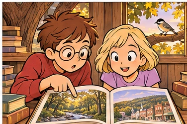
He peeked out the tree house window. Outside he saw the exact same view.
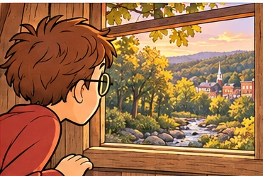
“We’re home,” whispered Annie.
The woods were lit with a golden late-afternoon light. The sun was about to set.
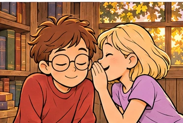
No time had passed since they’d left.
“Ja-ack! An-nie!” a voice called from the distance.
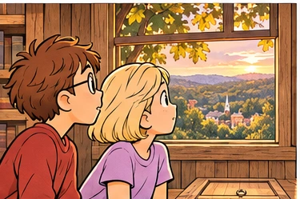
“That’s Mom,” said Annie, pointing.
Jack saw their mother far away. She was standing in front of their house. She looked very tiny.
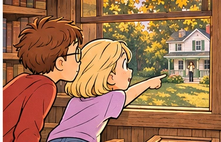
“An-nie! Ja-ack!” she called.
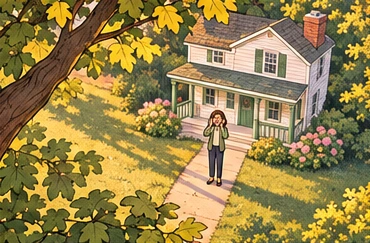
Annie stuck her head out the window and shouted, “Come-ing!”
Jack still felt . He just stared at Annie.
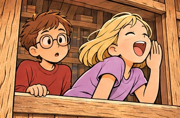
“What happened to us?” he said.
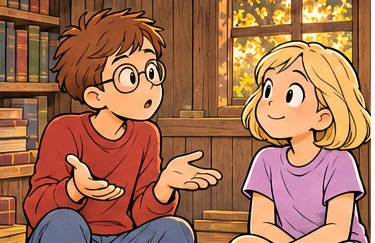
“We took a trip in a magic tree house,” said Annie simply.
“But it’s the same time as when we left,” said Jack.
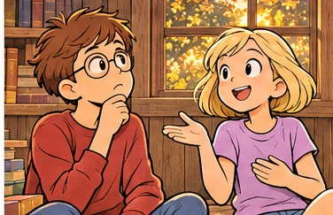
Annie .
“And how did it take us so far away?” said Jack. “And so long ago?”
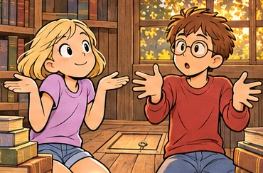
“You just looked at a book and said you wished we could go there,” said Annie. “And the magic tree house took us there.”
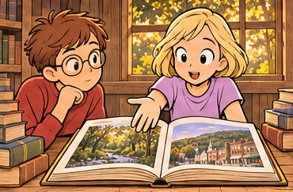
“But how?” said Jack. “And who built this magic tree house? Who put all these books here?”
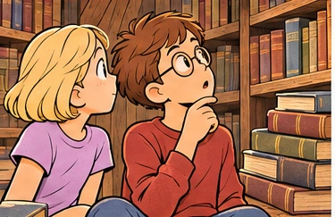
“A magic person, I guess,” said Annie.
A magic person?
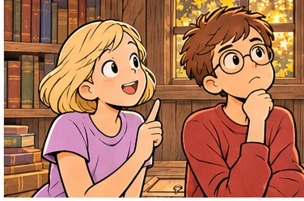
“Oh, look,” said Jack. “I almost forgot about this.” He reached into his pocket and pulled out the gold . “Someone lost this back there … in dinosaur land. Look, there’s a letter M on it.”
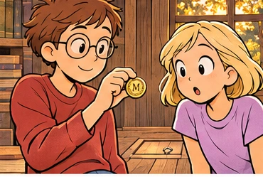
Annie’s eyes got round. “You think M stands for magic person?” she said.
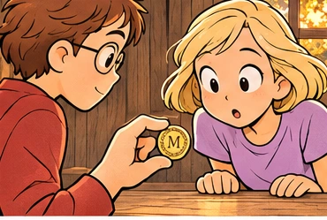
“I don’t know,” said Jack. “I just know someone went to that place before us.”
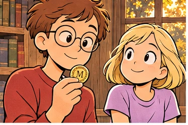
“Ja-ack! An-nie!” came the distant cry again.
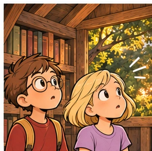
Annie poked her head out the window. “Come-ing!” she shouted.
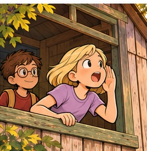
Jack put the gold back in his pocket.
He pulled the dinosaur book out of his pack. And put it back with all the other books.
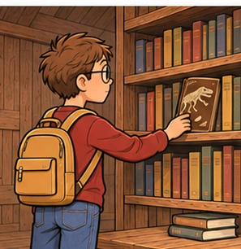